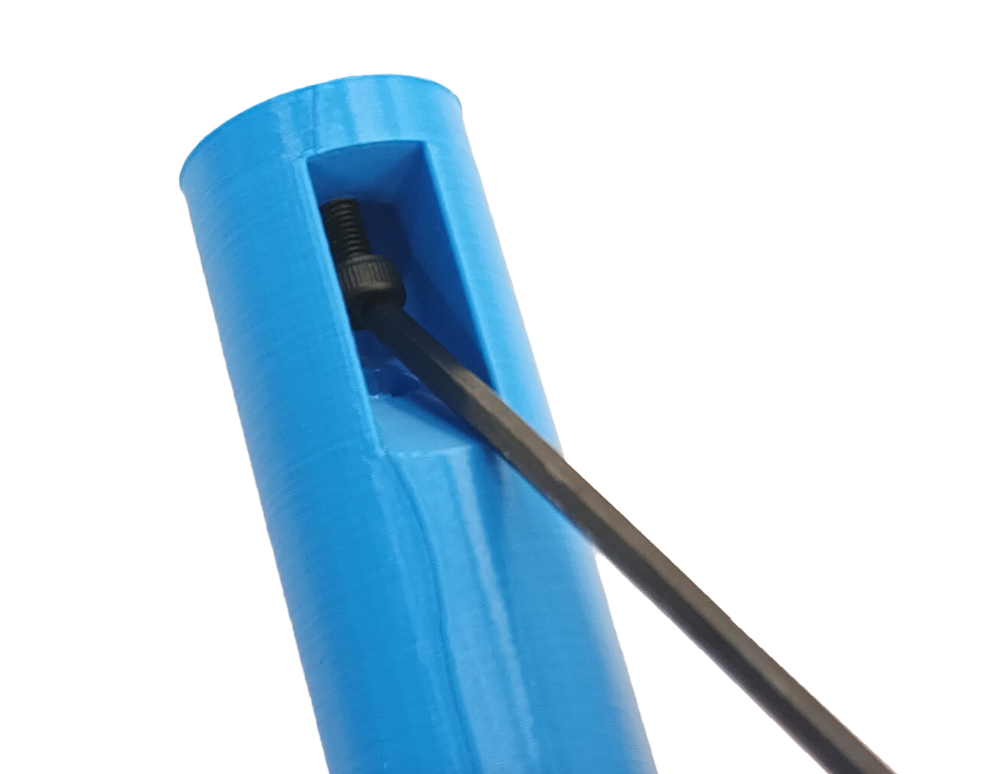
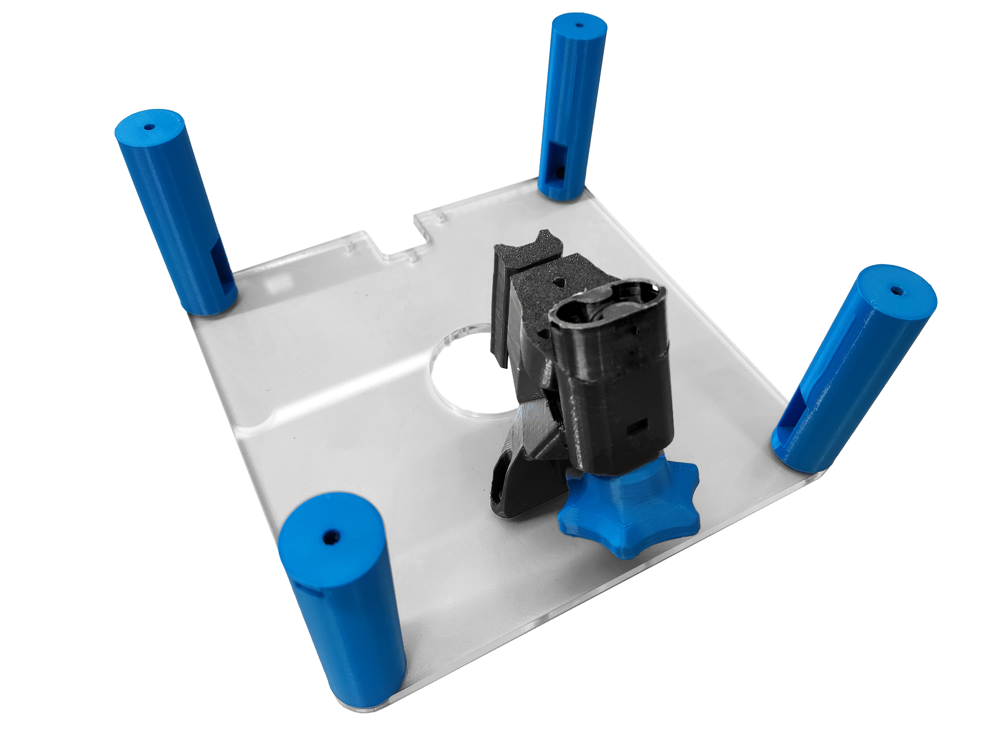
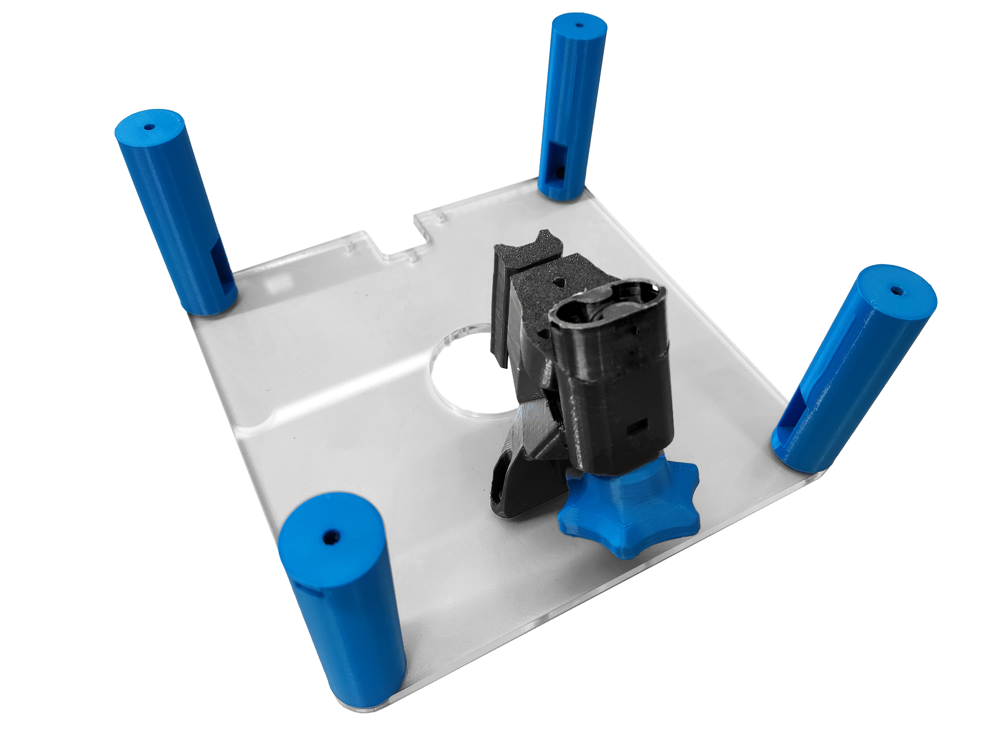

Attach parts to the top plate
Tools
Laser cut Parts
Mechanical Components
Printed Parts
Sub-Assemblies
You will also need the parts you assembled in previous sections.
Step 1: Prepare the top plate
- Positionate a heat insert for each corner of the top plate.
- Apply heat to the [insert][Heat-set insert] (using a soldering iron) and use gentle force to push it into position as decribed in the [guide to use heat inserts].
- Repeat this step to put two more inserts in the plate to attach the focusing assembly.


Step 2: Prepare the standoffs
- Insert a M3x10mm cap head screw into each standoff using the large hole that comes out the side of the standoff. The screw should poke out the end of the part as shown.
- Use a 2.5mm ball-ended hex key to turn the screw.


Step 3: Attach the standoffs
Step 4: Attach the focusing assembly
- Use a M3x8mm cap head screw on either side of the focusing mechanism, attach it to the top plate.
 
